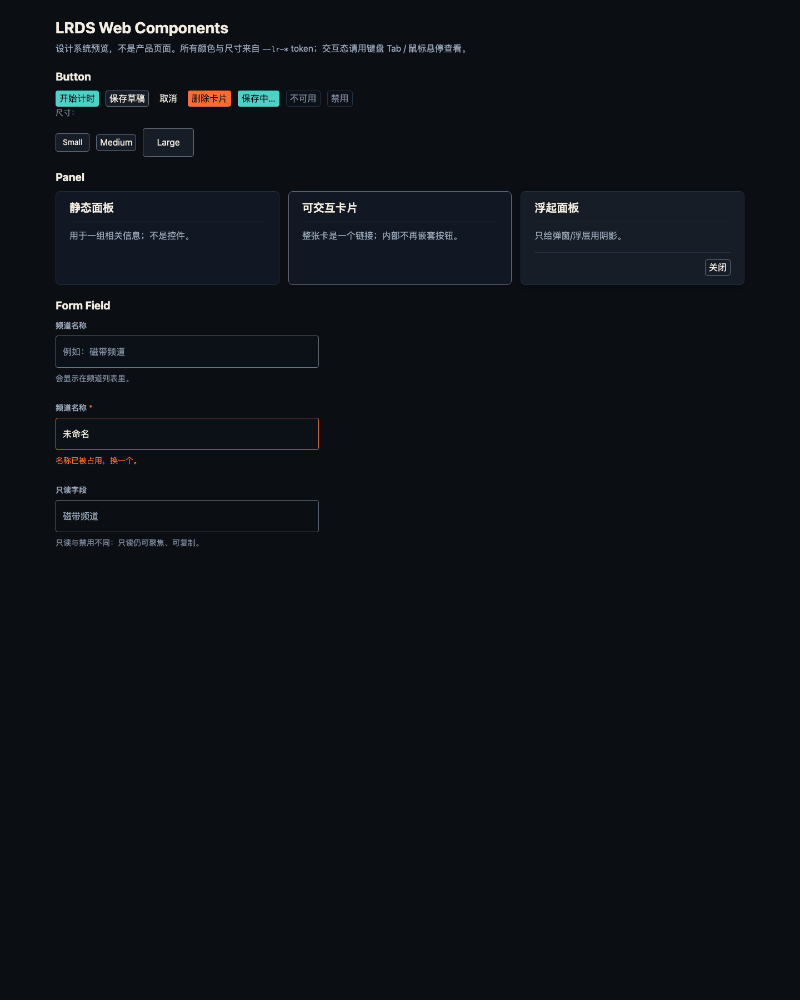
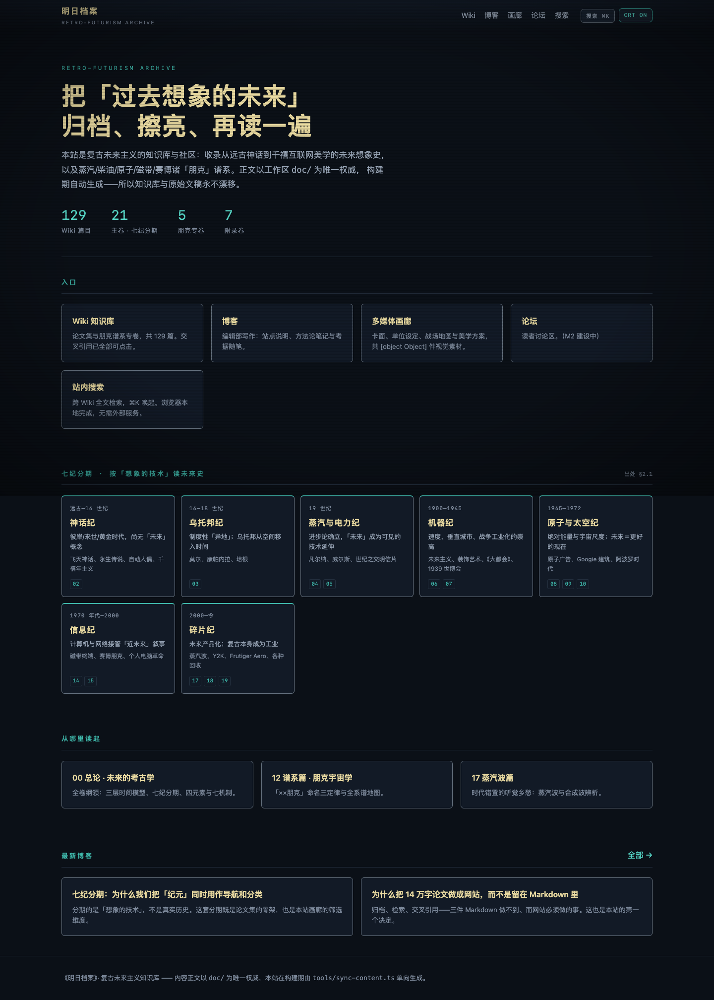
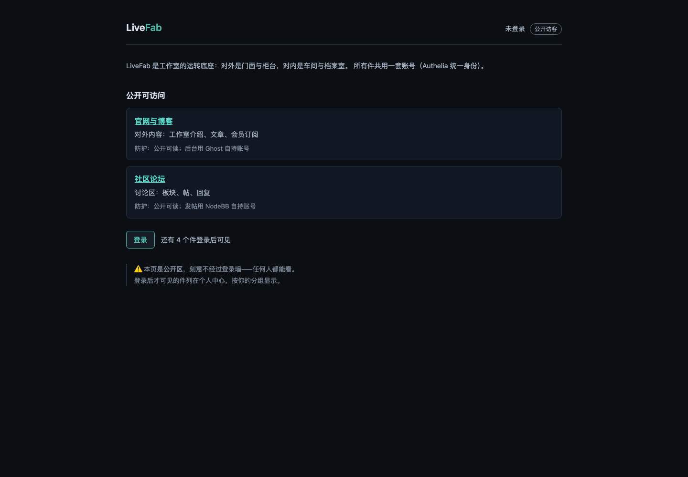
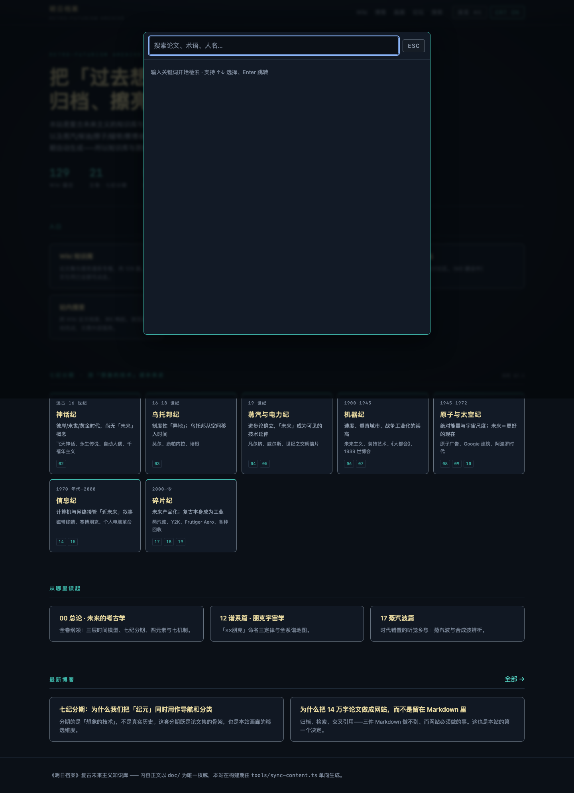
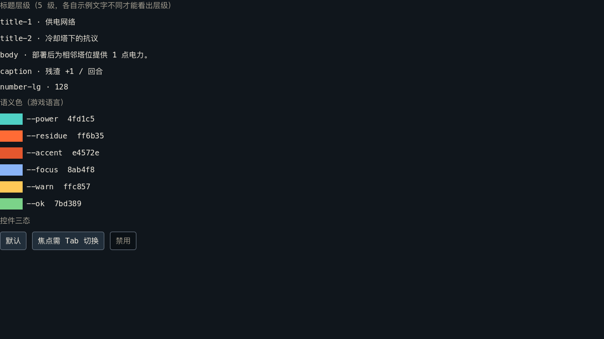

Future Archive · Console
SC-FUTURE-ARCHIVE-CONSOLE-v123 个颜色 ｜ mode=console
design/tools/build_hub.ts 生成；点击色块可复制色值；右上角可切换系统 / 亮色 / 暗色。打印时自动展开全部 Tab。一套语法，多种介质。设计系统不是配色表：它把品牌、语义 token、组件契约、介质适配、资产与评审收在一套可机器校验的结构里。
业务代码只引用 sys.* 或 product.*。
Web / Godot / App / 印刷共用层级与无障碍下限。
换风格卡，不换信息位置与交互语法。
对比度、焦点、减少动态、缩放由机器守。
JSON 只写一次；CSS / Godot / App 由脚本生成。
实现前有规格，发布前有验收；设计债按 P1 处理。
不推翻既有合理差异；先对齐语义，再替换取值。
没有真实消费者，不算交付。
| 产品 | 介质 | 状态 | 消费什么 |
|---|---|---|---|
| 未来档案 | Web | 已发布 0.29.0 | Web token + 组件层（button/panel/field） |
| LiveFab | Web | 已发布 0.4.0 | Web token + 组件层（button/panel） |
| 未来残片 | Godot | 已发布 0.22.0 | Godot token → Theme |
| 明日频道 | Godot | 风格卡已登记 0.2.5 | ChannelSkin .tres ↔ token 对账 |
| App kit | iOS / Android | 起步，无消费者 | 平台无关 app/tokens.json |
| Refu Game 001 | Godot | 冻结 | 不迁移；若复活按新产品接入 |
从未来的预期向下滚动，经过现在，回到已经发生的历史。未来是目标，不是承诺；现在是 2026-10-22 的快照；过去的时间取提交 author time，精确到分。
| 时间 / 事件 | 共享 token0 → 229 → ≤260 | 风格卡0 → 4 → 5 | 组件契约0 → 3 → 3–5 | 已接入/登记产品0 → 4 → 5 | 已落地介质0 → 2 → 5 | 无障碍无闸门 → AA → App+SR |
|---|---|---|---|---|---|---|
|
2027 H2
实体 / 打印介质起步等实体产品形态确定；先做材质/工艺/包装决策清单，再谈印刷与量产。 |
≤260 | 5 | 3–5 | 5 | 5 | App+SR |
|
2027 H1
App v0.3 + 第 5 张风格卡首个 App 消费者接入 app/tokens.json；真机走查后再决定 Swift/Kotlin 常量。 |
≤260 | 5 | 3–5 | 5 | 3 | App+SR |
|
2026 Q4
Archive 亮色 + Form Field 第二消费者网站阅读页先行；找不到真实表单就不扩 Form Field。 |
≤240 | 4 | 3 | 4 | 2 | Archive |
|
2026-10-22 12:16 NOW
现在：v0.2.0 已发布，v0.3 起步App kit 可接入但无真实 App；HUB 支持系统/亮色/暗色；下一步是 Archive 亮色与首个 App。 |
229 | 4 | 3 | 4 | 2 | AA |
|
2026-10-22 09:54
入门长文把设计系统的概念、治理与失败模式写成一篇可读的入门文章。 |
· | · | · | · | · | · |
|
2026-10-21 15:33
HUB 三态主题HUB 支持查询参数与 localStorage 记忆；打印强制亮色。 |
· | · | · | · | · | · |
|
2026-10-21 15:14
一页式 HUB把 Token / 风格卡 / 组件 / 产品 / 验收 / 决策收进一页。 |
· | · | · | · | · | · |
|
2026-10-21 13:56
App kit 起步平台无关 JSON + iOS/Android 规范；但无真实消费者。 |
· | · | · | · | · | · |
|
2026-10-21 13:50
v0.2.0 发布设计系统 v0.2.0、网站 0.29.0、LiveFab 0.4.0、未来残片 0.22.0、明日频道 0.2.5。 |
229 | 4 | 3 | 4 | 2 | AA |
|
2026-10-21 13:47
皮肤收口卡片交回 lr-panel，删除重复皮肤；发现 nowrap 回归并修复。 |
· | · | · | · | · | · |
|
2026-10-21 13:37
53 步 Tab 走查网站首页 / Wiki / 搜索 / LiveFab；Bun 运行时崩溃，改用 Node 完成。 |
· | · | · | · | · | 0 缺失焦点 |
|
2026-10-21 13:25
共享 Web 组件层渐进接入网站与 LiveFab；产品皮肤暂时保留。 |
· | · | · | · | · | · |
|
2026-10-21 13:12
3 个组件契约button / form-field / panel 契约先于实现；尺寸 token 补齐。 |
229 | · | 3 | · | · | · |
|
2026-10-21 13:09
风格卡 + M1/M2 block明日频道磁带卡登记；design/ 纳入结构闸门。 |
· | 4 | · | 4 | · | · |
|
2026-10-21 13:04
网站 token 化 + LiveFab网站全量颜色 token 化；LiveFab 接入 12 个颜色。 |
206 | 3 | · | 3 | 2 | · |
|
2026-10-21 12:43
v0.1 地基三层 token、生成器、四道闸门、网站/游戏两个试点。 |
186 | 2 | 0 | 2 | 2 | · |
|
2026-10-21 12:26
立项决策包先裁决治理、架构、双模、版本策略，再动手。 |
· | · | · | · | · | · |
|
2026-10 之前
没有统一系统之前网站 theme.css、游戏 tokens.json、LiveFab 内联样式、明日频道 .tres 各自演化。 |
0 | 0 | 0 | 0 | 0 | 无闸门 |
颜色按语义角色分组；数值是当前 sys.* 取值。对比度是相对 bg.base 的 WCAG 比值（alpha 色不参与文字对比度）。
交互描边 1.5px；焦点环 2px + offset 1px。
standard / emphasis 两条曲线；减少动态时归零。
风格卡不是主题：它换的是色板、材质、光源、装饰母题与图像处理；语法层（字阶、间距、焦点、信息位置）不变。
SC-FUTURE-ARCHIVE-CONSOLE-v123 个颜色 ｜ mode=console
SC-FUTURE-DEBRIS-ATOMIC-v118 个颜色 ｜ mode=console
SC-LIVEFAB-CONSOLE-v112 个颜色 ｜ mode=console
SC-TOMORROWS-CHANNEL-TAPE-v19 个颜色 ｜ mode=tape
| ID | 产品 | 颜色 | 源 | 投影 |
|---|---|---|---|---|
SC-FUTURE-ARCHIVE-CONSOLE-v1 | Future Archive · Console | 23 | JSON | 打开 |
SC-FUTURE-DEBRIS-ATOMIC-v1 | Future Debris · Atomic Era | 18 | JSON | 打开 |
SC-LIVEFAB-CONSOLE-v1 | LiveFab · Portal | 12 | JSON | 打开 |
SC-TOMORROWS-CHANNEL-TAPE-v1 | Tomorrow's Channel · Tape | 9 | JSON | 打开 |
完整可变/不变边界、对账方式见 07 风格卡登记。
契约先于实现：只规定解剖、状态、键盘/无障碍、Do/Don't、跨端与 token。当前 3 个组件都已在真实产品接入；Form Field 只有网站搜索框一个消费者。
| 组件 | Token 引用 | 网站 | LiveFab | 总引用 | 状态 |
|---|---|---|---|---|---|
| Button · 按钮契约 | 31 | 8 | 4 | 12 | 已接入 |
| Form Field · 表单字段契约 | 21 | 1 | — | 1 | 已接入 |
| Panel · 面板 / 卡片契约 | 21 | 21 | 1 | 22 | 已接入 |
button.md31 个 token 引用
form-field.md21 个 token 引用
panel.md21 个 token 引用

button / panel / field 的状态总览；真实渲染，不是手绘。点击看全图。
同一套语法，不同介质。截图来自真实构建 + Headless Chrome，Tab 走查记录在 09 产品走查。

未来档案 · Web · 0.29.0 ｜ 4 页 / 53 步 Tab / 0 缺失焦点 · 点击看全图

LiveFab · Web · 0.4.0 ｜ 服务卡片与 CTA 已使用组件层 · 点击看全图

搜索弹窗 · Meta+K 打开；输入框焦点使用独立蓝 · 点击看全图

未来残片 · Godot · 0.22.0 ｜ token → Theme，15 项断言 · 点击看全图
| 产品 | 介质 | 版本 | 证据 |
|---|---|---|---|
| 未来档案 | Nuxt / Web | 0.29.0 | README · 走查 |
| LiveFab | Astro / Web | 0.4.0 | README · 走查 |
| 未来残片 | Godot | 0.22.0 | README · 截图 |
| 明日频道 | Godot | 0.2.5 | 风格卡 · .tres |
| App kit | iOS / Android | 未发布 | 规范 · tokens.json（无真实消费者） |
机器守的部分：四道通用闸门 + 风格卡 + 组件契约 + 使用审计 + 生成物一致性。运行 bash design/tools/check.sh 可全部复跑。
check_tokens.ts7/7check_contrast.ts7/7check_no_raw_values.ts8/8build_tokens.ts --check8/8check_tomorrows_channel_skin.ts7/7check_component_contracts.ts8/8check_component_usage.ts4/4build_web_kit.ts --check3/3build_hub.ts --check4/4M1/M2 block 链接 0 失效 对比度 AA Tab 0 缺失焦点
Form Field 1 个消费者 App kit 无消费者 打印/实体后置
Active 0 ｜ Resolved 2。见 例外登记。
首个 App 消费者未出现；Form Field 等待第二个真实表单；打印/实体按 D6 后置。
| # | 决策 | 选择 | 状态 |
|---|---|---|---|
D1 | 定位 | 治理系统，而非风格指南 | 已裁决 |
D2 | 品牌架构 | 母品牌背书 + 产品子品牌 | 已裁决 |
D3 | 系统模型 | 五层 + ref / sys / product 三层 token | 已裁决 |
D4 | 单一事实来源 | JSON 为源 + 生成各端 + CI 对账 | 已裁决 |
D5 | 视觉基调 | 双模 Archive + Console | 已裁决 |
D6 | 介质优先级 | Web + Godot 先行；打印/实体后置 | 已裁决 |
D7 | 治理权限 | 设计主控可否决 token 违规 | 已裁决 |
D8 | 版本策略 | SemVer + 稳定性分级 + 弃用窗口 | 已裁决 |
D9 | 资产与法务 | 开源字体 + 自有图标 + 溯源 | 已裁决 |
D10 | 首版范围 | 地基 + 两个试点；外观基本不变 | 已裁决 |
D-011 | 青橙理念 | 9 篇 / 三批 / 上位理念 | 已裁决 |
青橙理念（D-011）：系列索引 · 00 总纲 · 01 未来考古 · 02 可感 · 03 可参与 · 04 适当的未来 · 05 游戏。00–05 已完稿，06–08 待写。
已完成
已完成
已完成
进行中
未开始
未开始
00_决策总表01_现状盘点02_系统架构03_治理与运营04_落地路线05_实现记录_v0.106_实现记录_v0.207_风格卡登记08_组件落地_v0.209_产品走查_v0.210_皮肤收口_v0.211_App_kit_v0.212_设计系统入门exceptions设计系统专项待办见 design/TODO.md；跨项目最高优先级待办见 根 TODO.md。本页只汇总设计系统状态。
设计系统 CHANGELOG ｜ 工作区 CHANGELOG。设计系统 tag：design-v0.0.1 / design-v0.1.0 / design-v0.2.0；工作区与产品 tag：workspace-v0.5.0、website-v0.29.0、livefab-v0.4.0、future-debris-v0.22.0、tomorrows-channel-v0.2.5。App kit 在 [未发布]。